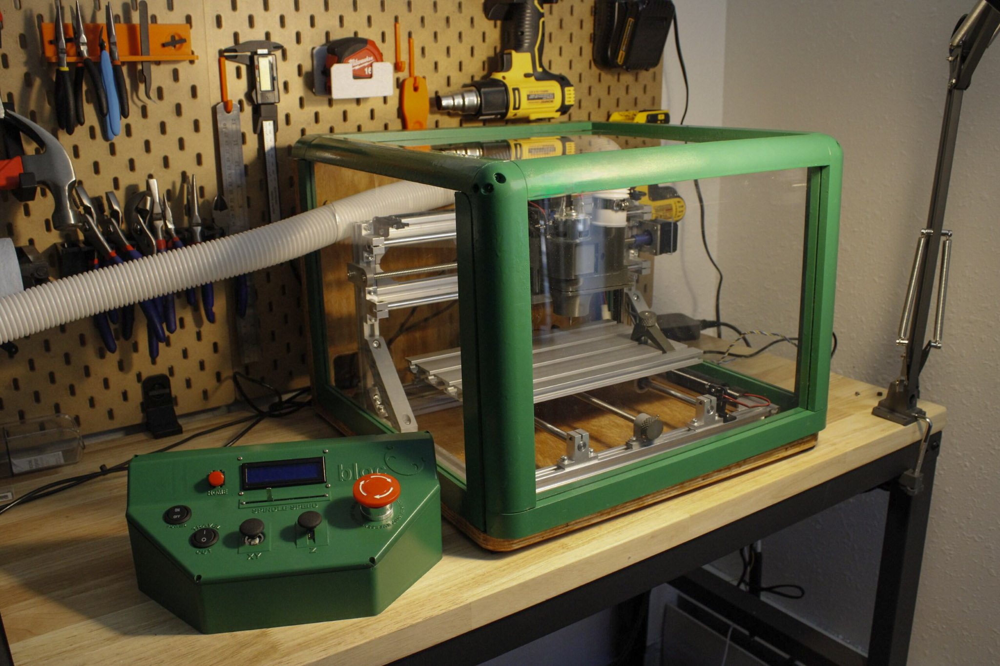

A senior design project on a team of four. Our goal was to make CNC machining safer and more accessible for makers and learners. We developed a gamified CNC interface, enclosure system, and innovation guide.
For more details, please visit the bloc website.